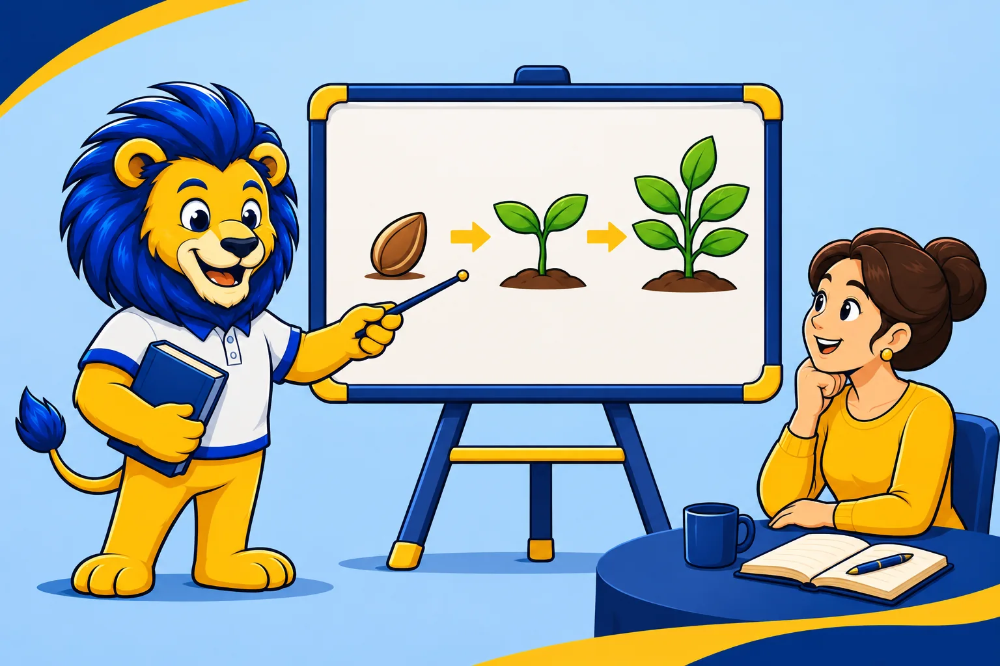

Learning Methods
Why Visuals Matter in Learning

Have you ever reread the same paragraph several times, only to understand it when you saw a drawing? The text may give you all the details while leaving you to figure out how they fit together. A diagram can put steps in order. Two photos side by side can make a difference easier to spot. An arrow on a screenshot can show you exactly where to look.
Visuals make relationships easier to see
Imagine a lesson on how plants grow. The text explains how a seed germinates and how a young plant develops. A drawing that shows the seed, the sprout, and the plant in sequence gives you a way to follow that change. The explanation can add details the drawing leaves out, such as the conditions that help the seed germinate.
When you are learning a digital tool, a screenshot can serve the same purpose. If the instructions ask you to change a setting, a small marker next to the button can save you from searching through every menu. The What Works Clearinghouse guide recommends combining graphics with verbal explanations that help learners interpret them.
Side-by-side images show what changes

Take photography as an example. You might understand the phrase “softer shadow” without being able to picture the difference. With two photos of the same mug side by side, you have something specific to compare. Look at the edge of each shadow. Does it fade gradually, or can you trace its outline easily?
Before choosing an image for a lesson, ask yourself, what should the learner notice? If it is the order of the steps, try a diagram with arrows. If it is a detail on a screen, mark that detail. If it is a difference, put the examples side by side and tell learners what to compare.
Try sketching what you understand

The next time an idea in a course, book, or webinar seems complicated, take a sheet of paper. Choose three parts of the explanation and put one in each box. Connect the boxes and explain each arrow in your own words.
If you get stuck between two boxes, you already have a specific question to take back to the lesson. For example, “Why does this step have to come first?” Once you find the answer, add it to your sketch. You will have a summary you can revisit and explain again.
Read next · How to Learn from a Step-by-Step Demonstration